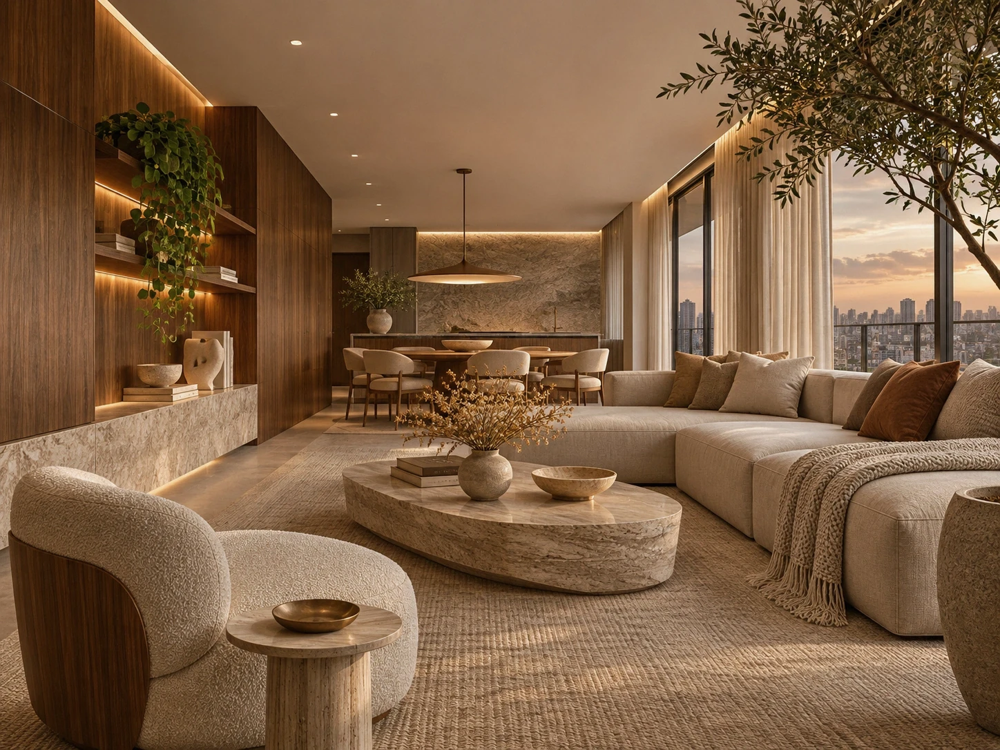
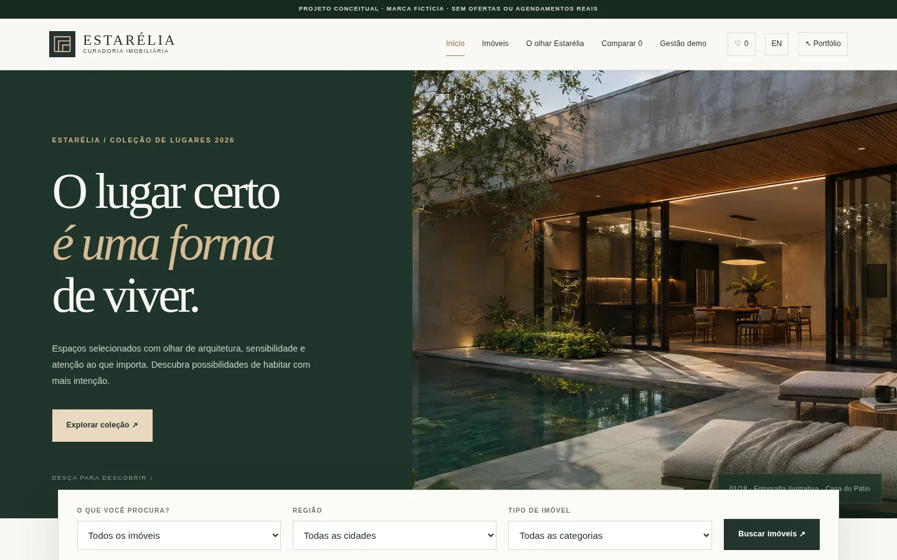
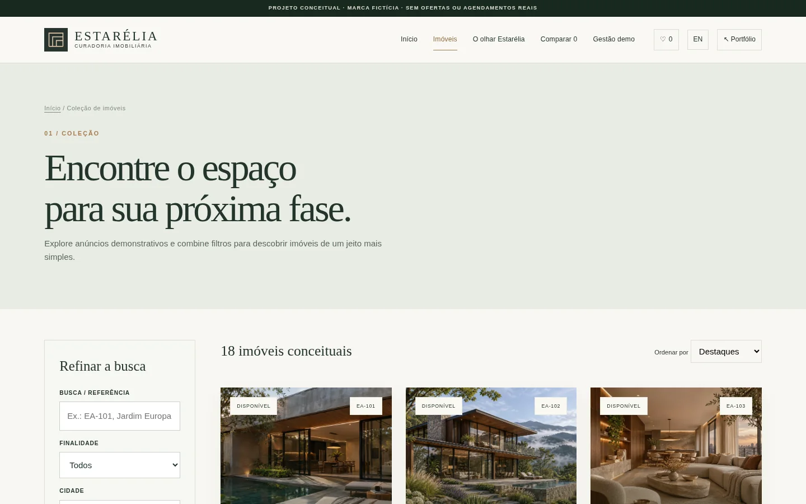
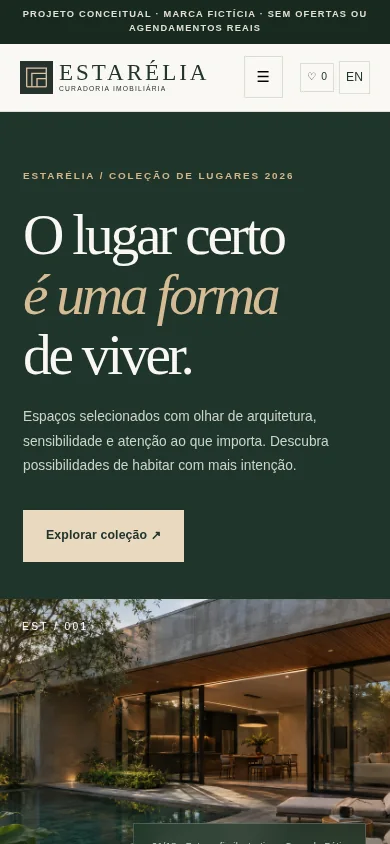

Curadoria antes do volume
A homepage privilegia imóveis selecionados e caminhos objetivos para encontrar outras opções.
Estudo de caso / 01 — 04
Imobiliário · Plataforma digital
O espaço certo entre desejo e decisão.
Uma experiência imobiliária que combina direção de arte arquitetônica com ferramentas de busca, avaliação e contato.

No cenário proposto, uma imobiliária precisa apresentar diferentes perfis de imóveis sem obrigar o visitante a percorrer páginas desconexas. A questão central não é apenas valorizar as imagens, mas tornar localização, preço, características e disponibilidade fáceis de comparar.
Pessoas interessadas em compra ou locação que desejam filtrar opções antes de solicitar uma visita.
Identidade, catálogo, detalhes, busca, favoritos, comparação e solicitação de visita.
Brand Design / Web Design / UI/UX
A identidade visual aposta em tons minerais, escala tipográfica controlada e fotografias de arquitetura com espaço para respirar. A linguagem editorial transmite curadoria; a interface traz estrutura e previsibilidade para a navegação.
O verde profundo sustenta o tom institucional; o bronze traz calor; o marfim mantém a leitura dos dados leve.

01 — Direção visualA homepage privilegia imóveis selecionados e caminhos objetivos para encontrar outras opções.
Dados como área, dormitórios, vagas e situação do anúncio aparecem em posições consistentes.
A solicitação de visita surge depois da exploração de fotos e características, sem interromper a pesquisa.
Seleção entre venda e locação, região e tipo de imóvel.
Filtros combináveis, ordenação e contagem de resultados.
Galeria, ficha completa, favoritos e comparação entre opções.
Fluxo demonstrativo de visita com revisão dos dados.
Homepage, catálogo e detalhes foram organizados como partes do mesmo produto digital. As capturas abaixo mostram o website implementado, não apenas uma peça gráfica.



Uma experiência imobiliária que combina direção de arte arquitetônica com ferramentas de busca, avaliação e contato.
Explorar a experiênciaOs controles atuam sobre 18 anúncios demonstrativos.
Permitem guardar e comparar imóveis no próprio navegador.
Anúncios vendidos, reservados ou alugados têm comportamento específico.
Um módulo demonstrativo permite editar registros sem um backend real.
O resultado é uma plataforma de demonstração com caminhos reais de busca e comparação. Não há imóveis à venda nem agendamentos confirmados por uma empresa real.
Sobre as imagens. Imagens de arquitetura ilustram o conceito e não comprovam imóveis específicos.
Próximo projeto / 02 — 04
AURÍNA